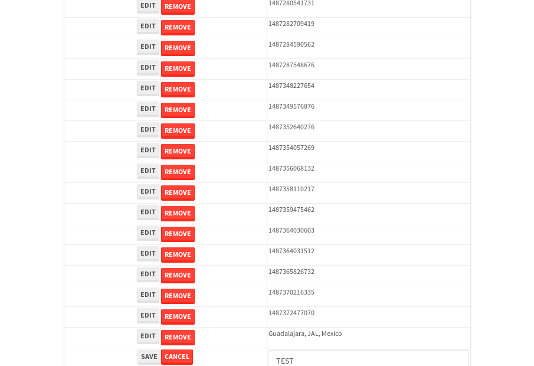

tbColumn.Grid Sorting - 27.572sTests: 5Skipped: 0Failures: 0 should sort data in ascending order then on descending order when sorting by Order Id column - 5.556sTests passed: 100.00%should order data in ascending order when click-sorting an unsorted text column - 4.945sTests passed: 100.00%should order data in descending order when click-sorting an ascending-sorted text column - 5.843sTests passed: 100.00%should order data in ascending order when click-sorting an unsorted date column - 5.622sTests passed: 100.00%should order data in descending order when click-sorting twice an unsorted date column - 5.606sTests passed: 100.00%
tbColumn.Grid Components - 4.244sTests: 3Skipped: 0Failures: 0 should print grid - 1.537s***Skipped***Tests passed: 0%should export grid - 1.467s***Skipped***Tests passed: 0%should show column selector - 1.239sTests passed: 100.00%
tbSingleForm.Form validations - 2.853sTests: 2Skipped: 0Failures: 0 should have an empty required field - 1.665sTests passed: 100.00%should not be able to click on save - 1.188sTests passed: 100.00%
Tubular Filters.tbColumnFilter - 109.645sTests: 12Skipped: 0Failures: 0 should cancel filtering when clicking outside filter-popover - 9.342sTests passed: 100.00%should disable Value text-input for "None" filter - 6.945sTests passed: 100.00%should disable apply button for "None" filter - 6.813sTests passed: 100.00%should decorate popover button when showing data is being filtered for its column - 12.33sTests passed: 100.00%should correctly filter data for the "Equals" filtering option - 8.616sTests passed: 100.00%should correctly filter data for the "Not Equals" filtering option - 8.57sTests passed: 100.00%should correctly filter data for the "Contains" filtering option - 8.309sTests passed: 100.00%should correctly filter data for the "Not Contains" filtering option - 8.735sTests passed: 100.00%should correctly filter data for the "Starts With" filtering option - 6.97sTests passed: 100.00%should correctly filter data for the "Not Starts With" filtering option - 6.818sTests passed: 100.00%should correctly filter data for the "Ends With" filtering option - 7.817sTests passed: 100.00%should correctly filter data for the "Not Ends With" filtering option - 7.072sTests passed: 100.00%
Tubular Filters.tbColumnDateTimeFilter - 138.843sTests: 12Skipped: 0Failures: 0 should cancel filtering when clicking outside filter-popover - 7.44sTests passed: 100.00%should disable Value text-input for "None" filter - 6.501sTests passed: 100.00%should disable apply button for "None" filter - 7.748sTests passed: 100.00%should clear filtering when clicking on Clean button - 18.627sTests passed: 100.00%should decorate popover button when showing data is being filtered for its column - 12.49sTests passed: 100.00%should correctly filter data for the "Equals" filtering option - 7.353sTests passed: 100.00%should correctly filter data for the "Not Equals" filtering option - 7.259sTests passed: 100.00%should correctly filter data for the "Between" filtering option - 12.196sTests passed: 100.00%should correctly filter data for the "Greater-or-equal" filtering option - 12.483sTests passed: 100.00%should corretlly filter data for the "Greater" filtering option - 12.596sTests passed: 100.00%should correctly filter data for the "Less-or-equal" filtering option - 11.741sTests passed: 100.00%should correctly filter data for the "Less" filtering option - 11.799sTests passed: 100.00%
Tubular Filters.tbColumnOptionsFilter - 82.298sTests: 3Skipped: 0Failures: 0 should cancel filtering when clicking outside filter-popover - 9.825sTests passed: 100.00%should decorate popover button when showing data is being filtered for its column - 12.23sTests passed: 100.00%should filter column-elements in accordance to the selected filter when selecting a single option - 49.211sTests passed: 100.00%
Tubular Filters.tbTextSearch - 49.078sTests: 5Skipped: 0Failures: 0 min-chars is not set - 1.03sTests passed: 100.00%should filter data in searchable-column customer name to matching inputted text, starting from 3 characters - 7.098sTests passed: 100.00%should filter data in searchable-column shipper city to matching inputted text, starting from 3 characters - 12.572sTests passed: 100.00%should show clear button when there is inputted text only - 6.426sTests passed: 100.00%should clear filtering when clicking clear button - 16.41sTests passed: 100.00%
tbForm related components.tbCheckboxField - 8.225sTests: 2Skipped: 0Failures: 0 should save changes on "SAVE" - 3.683sTests passed: 100.00%should discard changes on "CANCEL" - 3.236sTests passed: 100.00%
tbForm related components.tbDropDownEditor - 16.144sTests: 5Skipped: 0Failures: 0 should set initial input value to the value of "value" attribute when defined - 2sTests passed: 100.00%should show the component name value in a label field when "showLabel" attribute is true - 1.904sTests passed: 100.00%should show a help field equal to this attribute, is present - 2.965sTests passed: 100.00%should submit modifications to item/server when clicking form "Save" - 5.794sTests passed: 100.00%should NOT submit modifications to item/server when clicking form "Cancel" - 2.536sTests passed: 100.00%
tbForm related components.tbTextArea - 17.691sTests: 7Skipped: 0Failures: 0 should set initial input value to the value of "value" attribute when defined - 1.941sTests passed: 100.00%should be invalidated when the number of chars is not in the range of "min" and "max" attributes - 3.006sTests passed: 100.00%should show the component name value in a label field when "showLabel" attribute is true - 2.032sTests passed: 100.00%should show a help field equal to this attribute, is present - 2.069sTests passed: 100.00%should require the field when the attribute "required" is true - 2.099sTests passed: 100.00%should submit modifications to item/server when clicking form "Save" - 3.247sTests passed: 100.00%should NOT submit modifications to item/server when clicking form "Cancel" - 2.396sTests passed: 100.00%
tbForm related components.tbDateEditor - 14.712sTests: 6Skipped: 0Failures: 1 should set initial date value to the value of "value" attribute when defined - 2.054sTests passed: 100.00%should be invalidated when the date is not in the range of "min" and "max" attributes - 2.731sTests passed: 100.00%should show the component name value in a label field when "showLabel" attribute is true - 1.947sTests passed: 100.00%should show a help field equal to this attribute, is present - 1.827sTests passed: 100.00%should submit modifications to item/server when clicking form "Save" - 2.631sExpected false to be true.✗Tests passed: 0.00%should NOT submit modifications to item/server when clicking form "Cancel" - 2.646sTests passed: 100.00%
tbForm related components.tbTypeaheadEditor - 18.584sTests: 7Skipped: 0Failures: 0 should show an options list when there is an API-info/component entered-data - 2.442sTests passed: 100.00%should select the option clicked - 2.365sTests passed: 100.00%should show a "delete" button when an option/match is selected, and delete the option if button is clicked - 2.752sTests passed: 100.00%should show a label value equal to the component name when "showLabel" attribue is true - 2.214sTests passed: 100.00%should require a value when "require" attribute is true - 2.375sTests passed: 100.00%should submit modifications to item/server when clicking form "Save" - 3.423sTests passed: 100.00%should NOT submit modifications to item/server when clicking form "Cancel" - 2.207sTests passed: 100.00%
tbForm related components.tbSimpleEditor - 24.562sTests: 9Skipped: 0Failures: 0 should set initial input value to the value of "value" attribute when defined - 2.25sTests passed: 100.00%should be invalidated when the number of chars is not in the range of "min" and "max" attributes - 2.83sTests passed: 100.00%should show the component name value in a label field when "showLabel" attribute is true - 2.628sTests passed: 100.00%should set input placeholder to the value of "placeholder" attribute - 2.196sTests passed: 100.00%should validate the control using the "regex" attribute, if present - 2.277sTests passed: 100.00%should show a help field equal to this attribute, is present - 2.574sTests passed: 100.00%should require the field when the attribute "required" is true - 2.213sTests passed: 100.00%should submit modifications to item/server when clicking form "Save" - 3.258sTests passed: 100.00%should NOT submit modifications to item/server when clicking form "Cancel" - 3.55sTests passed: 100.00%
tbForm related components.tbNumericEditor - 20.115sTests: 7Skipped: 0Failures: 0 should set initial component value to the value of "value" attribute when defined - 1.972sTests passed: 100.00%should be invalidated when the entered number is not in the range of "min" and "max" attributes - 2.723sTests passed: 100.00%should show the component name value in a label field when "showLabel" attribute is true - 2.055sTests passed: 100.00%should show a help field equal to this attribute, is present - 2.964sTests passed: 100.00%should require the field when the attribute "required" is true - 2.202sTests passed: 100.00%should submit modifications to item/server when clicking form "Save" - 3.565sTests passed: 100.00%should NOT submit modifications to item/server when clicking form "Cancel" - 2.915sTests passed: 100.00%
tbForm Connection Error NoModelKey - 2.43sTests: 1Skipped: 0Failures: 0 tbForm connection error functionality - 0.49sTests passed: 100.00%
tbForm Connection Error NoServerUrl - 2.661sTests: 1Skipped: 0Failures: 0 tbForm connection error functionality - 0.554sTests passed: 100.00%
tbGridComponents - 36.689sTests: 6Skipped: 0Failures: 4 should add item with newRow method - 4.907sExpected 'EDIT REMOVE TEST' not to be 'EDIT REMOVE TEST'.✗Tests passed: 50.00%should add item with newRow method and cancel action - 0.954sTests passed: 100.00%should update item with tbSaveButton - 3.861sExpected '' to be 'TEST'.✗Tests passed: 0.00%should NOT update item on cancel Update action - 1.607sFailed: ElementNotVisibleError✗Tests passed: 0.00%should remove item with tbRemoveButton - 21.657sExpected 54 not to be 54, 'should remove the row from the table'.✗Tests passed: 50.00%should NOT remove item on cancel Remove action - 1.204sTests passed: 100.00%
tbGridPager.navigation buttons - 9.265sTests: 1Skipped: 0Failures: 0 should perform no action when clicking on the numbered navigation button corresponding to the current-showing results page - 1.308sTests passed: 100.00%
tbGridPager.navigation buttons.first/non-last results page related functionallity - 3.924sTests: 2Skipped: 0Failures: 0 should disable "first" and "previous" navigation buttons when in first results page - 1.557sTests passed: 100.00%should enable "last" and "next" navigation buttons when in a results page other than last - 2.367sTests passed: 100.00%
tbGridPager.navigation buttons.last/non-first results page related functionallity - 4.033sTests: 2Skipped: 0Failures: 0 should disable "last" and "next" navigation buttons when in last results page - 2.06sTests passed: 100.00%should enable "first" and "previous" navigation buttons when in a results page other than first - 1.973sTests passed: 100.00%
tbGridPager.page navigation - 7.486sTests: 5Skipped: 0Failures: 0 should go to next results page when clicking on next navigation button - 1.449sTests passed: 100.00%should go to previous results page when clicking on previous navigation button - 1.643sTests passed: 100.00%should go to last results page when clicking on last navigation button - 1.718sTests passed: 100.00%should go to first results page when clicking on first navigation button - 1.393sTests passed: 100.00%should go to corresponding results page when clicking on a numbered navigation button - 1.282sTests passed: 100.00%
tbGridPagerInfo - 4.848sTests: 2Skipped: 0Failures: 0 should show text in accordance to numbered of filter rows and current results-page - 1.296sTests passed: 100.00%should show count in footer - 0.604sTests passed: 100.00%
tbHttp - 18.604sTests: 8Skipped: 1Failures: 0 should be authenticated - 3.872sTests passed: 100.00%retrieve data - 2.463sTests passed: 100.00%should not login bad credentials - 2.374sTests passed: 100.00%should have a refresh token - 2.561sTests passed: 100.00%should remove authentication - 2.279sTests passed: 100.00%get method-Is not authenticated - 2.449sTests passed: 100.00%post method-Is not authenticated - 2.604sTests passed: 100.00%should regenerate access token on post - 0s***Skipped***Tests passed: 0%
tbPageSizeSelctor - 9.673sTests: 4Skipped: 0Failures: 0 should filter up to 10 data rows per page when selecting a page size of "10" - 2.702sTests passed: 100.00%should filter up to 20 data rows per page when selecting a page size of "20" - 1.549sTests passed: 100.00%should filter up to 50 data rows per page when selecting a page size of "50" - 2.174sTests passed: 100.00%should filter up to 100 data rows per page when selecting a page size of "100" - 1.759sTests passed: 100.00%
tbRowSelectable - 9.637sTests: 2Skipped: 0Failures: 0 selected rows - 4.417sTests passed: 100.00%unselected rows - 3.45sTests passed: 100.00%
tbSingleForm - 22.013sTests: 8Skipped: 0Failures: 1 should load correct info - 2.316sTests passed: 100.00%should change customer name - 2.436sTests passed: 100.00%should save it - 3.245sFailed: Element is not enabled✗Tests passed: 0.00%should clear the inputs - 2.393sTests passed: 100.00%should update - 2.704sTests passed: 100.00%should reset editor - 3.665sTests passed: 100.00%should not save if not Changes - 2.304sTests passed: 100.00%should not be able to click on save - 2.947sTests passed: 100.00%


{kind=link}